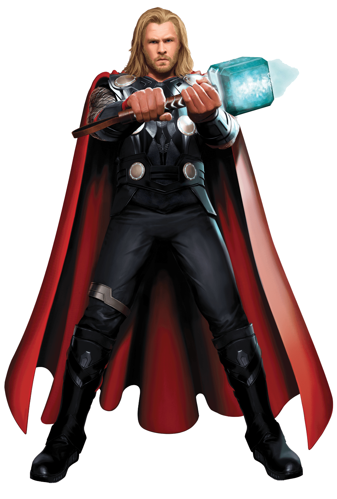

Eons ago, Bor, father of Odin, clashes with the Dark Elf Malekith, who seeks to unleash a weapon known as the Aether on the nine realms.
After conquering Malekith's forces, including enhanced warriors called the Kursed, on their home world of Svartalfheim,
Bor safeguards the Aether within a stone column. Unknown to Bor, Malekith and a handful of Dark Elves escape into suspended animation.

In present-day Asgard, Loki stands imprisoned for his war crimes on Earth. Meanwhile, Thor, alongside warriors Fandral, Volstagg,
and Sif, repels marauders on Vanaheim, home of their comrade Hogun; it is the final battle in a war to pacify the Nine Realms following
the reconstruction of the Bifröst, the "Rainbow Bridge" between realms, which had been destroyed two years earlier. The Asgardians
soon learn that the Convergence, a rare alignment of the Nine Realms, is imminent; as the event approaches, portals linking the worlds appear at random.
In London, astrophysicist Dr. Jane Foster and her intern Darcy Lewis travel to an abandoned factory where such portals have appeared,
disrupting the laws of physics around them. Separating from the group, Foster is teleported to another world, where she absorbs the Aether.
Heimdall alerts Thor that Foster has moved beyond his near all-seeing vision, leading Thor to Earth. When Thor finds Foster, she inadvertently
releases an unearthly force, and Thor returns with her to Asgard. Odin, recognizing the Aether, warns that the Aether will not only kill Foster
but that its return heralds a catastrophic prophecy.
Malekith, awakened by the Aether's release, turns Algrim into a Kursed and attacks Asgard. During the battle, Malekith and Algrim search for
Foster, sensing that she contains the Aether. Thor's mother Frigga is killed protecting Foster, and Malekith and Algrim are forced to flee
without Foster. Despite Odin's orders not to leave Asgard, Thor reluctantly enlists the help of Loki, who knows of a secret portal to Svartalfheim,
where they will use Foster to lure and confront Malekith, away from Asgard. In return, Thor promises Loki vengeance on Malekith for killing their
mother. With Volstagg and Sif stalling Asgardian soldiers and Fandral assisting their escape, Thor, Loki, and Foster head to Svartalfheim.
There, Loki tricks Malekith into drawing the Aether out of Foster, but Thor's attempt to destroy the exposed substance fails. Malekith merges
with the Aether and leaves in his ship as Loki is fatally wounded while killing Algrim. Thor, cradling Loki in his arms, promises to tell their
father of his sacrifice. Afterward, Thor and Foster discover another portal in a nearby cave and reunite in London with Lewis and Foster's mentor
Dr. Erik Selvig—who was briefly institutionalized due to the mental trauma he suffered during Loki's attack on Earth. They learn that Malekith plans
to restore the Dark Elves to dominance by unleashing the Aether at the center of the Convergence in Greenwich. Thor battles Malekith through various
portals and across multiple worlds until one portal separates them, leaving Malekith unopposed on Earth. Thor returns in time to help his mortal
comrades use their scientific equipment to transport Malekith to Svartalfheim, where he is crushed by his own damaged ship.
Thor returns to Asgard, where he declines Odin's offer to take the throne and tells Odin of Loki's sacrifice. As he leaves, Odin's form transforms
into Loki, who is alive and impersonating Odin.
In a mid-credits scene, Volstagg and Sif visit the Collector and entrust the Aether to his care, commenting that with the Tesseract already
in Asgard, having two Infinity Stones so close together would be unwise. As they leave, the Collector states his desire to acquire the other
five Stones. In a post-credits scene, Foster and Thor reunite on Earth, while somewhere in London, a frost monster from Jotunheim—accidentally
transported to Earth during the final battle—continues to run amok.